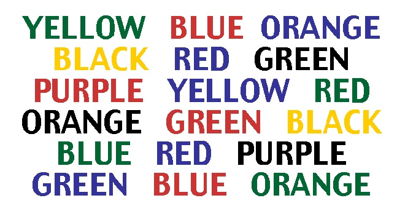

Stroop Effect

This test is based on that there is a mismatch between the name of the color and the color it is printed on. This exercise is somewhat challenging and is prone for longer reaction time when answering and failing is common. This is why we have chosen this as an exercise for you to practice your attention and focus. This test can be done in two ways, the first one is that you will say the written words you see on the picture on the left. The second trial is that you will have to name the ink color instead. This is only an example of an exercise you can do to improve your mental focus and becoming more centrated during times you want to be. With this we wish to tell you that to see results you have to make it to frequent exercise for you, where you use not only this picture but others too.
Practice your mindfulness
To practice your mindfulness by meditation, by dedicating 10 to 20 minutes a day to mindfulness meditation. This is something attention experts highly recommend for improvement. Mindfulness meditation is simply focusing completely on what you are doing, slowing down, and observing all of the physical and emotional sensations you are experiencing in that moment. This is another way to improve your concentrarion by mindfulness meditation. Practicing your mindfulness will also give you the ability to push back distractions as they arise. We recommend meditation when most needed, of course demending on the situation you’re in.